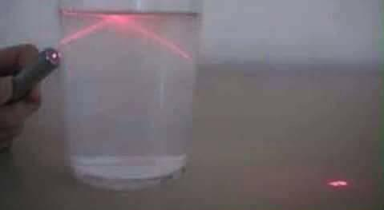

Gustavo
Actualmente se cuentan muchas teorias sobre como se origino esto, algunas parecen tener cordura, otras como si fuera una historia escrita por un infante de 6 anios,
pero entre que son peras y son manzanas, como dice mi abuelita, nos enfrentamos a una realidad demasiado complicada, en la que el mundo esta detenido, en el que
todos debemos estan encerrados, y los pocos que salimos debemos tomar una distancia de seguridad, usar cubrebocas y gel antibacterial para evitar cualquier probabilidad
de contagio. La situación parece que cada día empeora en vez de mejorar, pero existe una esperanza en que esto pasara rapido, y pues la esperanza es lo que muere al
ultimo.
La economia del pais esta bajando a niveles criticos, y tendremos una crisis masiva cuando esto acabe, muchos trabajadores son despedidos, empresas se declaran
en quiebra, los productos empiezan a escasear y para la sociedad mexicana quedarse sin cigarros y alcohol es algo casi mortal. Se han prohibido las fiestas, el unico
contacto es con las personas con las que vives, como en los tiempos de antes, pero igual nos podemos auxiliar de la tecnologia, obviamente solo en los lugares donde
existe, lugares como mi pueblo de origen estan incomunicados, sin poder tomar clases y sin poderse adaptar a las medidas de clases en linea que se proponen.
Tal vez y esto es una prueba de evolucion y solamente los mas fuertes podremos sobrevivir, no se si yo sea de esa especie que pueda sobrevivir, pero de algo estoy
seguro, el mundo nunca volvera a ser igual despues de esta pandemia, a los humanos nos gusta aprender las cosas de mala manera, y tristemente volvemos a caer con la
misma piedra. Espero que esto acabe en su debido momento y podamos aprender la leccion y no olvidarla en mucho tiempo.
Ivan
En la actualidad se puede ver el reflejo de como es el mundo de como los gobieros prefieren invertir en material belico que en ciencia y medicina, que la educacion y cultura de la gente es muy importante para las catastrofes, la disciplina y la educacion es vital para la prosperidad de una civilizacion. actualmente la economia se sostiene gracias a las tecnologias de la informacion, esto deberia de ser una leccion para la sociedad y de como estamos malx
Rodrigo
Considero que la situacion ha sido un golpe muy rudo a la economia mundial, pues el simple hecho de detener las actividades en todo el mundo significa un alto impacto. En lo que respecta a México, solo se demuestra una vez más
que no se está preparado, que no se tiene la infraestructura médica, que el acceso a la educacion por muy básica que sea sigue siendo un privilegio
pues no todos cuentan con internet en casa. Que las clases en linea no son una buena opcion si solo se llenan de tareas a los alumnos y no se les explica lo que
deben de hacer. Como méxicanos tenemos un odio hacia el gobierno, y creemos que cualquier acción o suceso siempre estará en nuestra contra, y esta vez, no fue la excepcion
al pedir que se detuvieran las actividades pocos dias para evitar que se prolongara el tiempo de aislamiento, cosa que se tomó a juego y ahora llevamos más de 40 días en aíslamiento.
Lo malo de todo esto es que aun falta por venir "lo peor", cuando todo esto termine, la economía mundial estará destrozada, con ello, los sueños de las personas quienes perdieron todo.

Vania
Claramente la situación económica de todo el mundo se verá afectada, probablemente
se tarde años para estabilizarse. Habrá mucho desempleo, las personas de clase baja serán
las más afectadas. Puede que el home office se vuelva más común, incluso
podría aumentar la cantidad de personas que estudian a distancia. Puede que sigamos
siguiendo las medidas de distanciamiento social por un tiempo. Pero, honestamente
siempre he creído que los humanos somos muy emocionales, durante la emergencia sanitaria
todos se vuelven más empáticos, todos se preocupan y se unen, reflexionan y quieren
valorar todo lo que extrañan, pero estoy casi segura que en unos
años todos olvidaran lo que pasó, no mejoraremos como personas. No habrá un cambio
positivo.
Andrés
El mundo siempre ha tenido problemas, y para bien o para mal, siempre hemos avanzado con ellos.
Los problemas que la sociedad ha ido acarreando desde su consolidación nos han llevado a adoptar
ciertas creencias que pudieron o no haber sido un factor para darle al virus COVID-19 las condiciones
más adecuadas para su rápido desarrollo, por lo que este suceso nos da la oportunidad de reevaluar
las cosas que tomamos como cotidianas como lo pueden ser el uso y necesidad de transporte público,
el servicio médico condicionado sólo a algunas personas o la innecesaria infraestructura de comunicación
que soporta servicios telefónicos, fax u otros medios además del internet que podrían ser fácilmente
reemplazados por éste último. Estamos conscientes de nuestros problemas, ya que nos afectan tanto económica
como socialmente, pero siempre hemos decidido pensar en beneficio de nuestros propios intereses, manteniendo
algunas cosas innecesarias o creando otras sólo porque le generan dinero a algunos cuántos. Esta es una
oportunidad para pensar en sociedad, en un beneficio común. Si un suceso de escala global como lo es este
virus no cambia esa manera de pensar y nos hace tomar acciones al respecto para mejorar en todos los sentidos,
no tenemos otra opción mas que aceptar nuestra condena autoimpuesta, pero confío en lo contrario.
Karen
Lo que esta pasando en la actualidad yo pienso que es una llamada de atencion
para el ser humano, ya que como se ha visto en las noticias todo el mundo o
si no es que la mayoria esta en cuarentena y esto ha provocado que nuestros ecosistemas
tengan una reconstruccion como por ejemplo los animales andan por todos lados libres
y los mares y playas estan limpias asi como ha bajado la contaminacion, y que esto nos
sirva a valolar mas las cosas que hacemos cada dia, el poder salir a donde sea,
comer lo que se nos antoje, ver a nuestros familiares,amigos y seres queridos, poder
transitar libremente por nuestra calle, etc, ya que el dia de hoy no podemos hacerlo
porque tenemos que quedarnos en casa y mas que tomarlo con negatividad y deseperacion
debemos tomarlo con la mejor actitud aprovechar cosas pendientes que teniamos, a
dormir mas, aprender nuevas cosas y tambien a distraernos con lo que nos gusta hacer
y que aveces no podemos hacer porque no tenemos tiempo, por el ritmo de vida que llevamos.
En conclusion debemos cuidar nuestro planeta, ser mas conciente de que es nuestro unico
hogar y que tanto nos da vida como tambien nos puede llevar a la muerte con la escases
de recursos entre otras cosas y tambien a valolar mas las cosas sencillas que hacemos
dia a dia.
Escrito por Gonzalez Mejia Karen Anabel
Juan
Evidentemente la situación actual cambiará bastante al mundo entero, de una manera muy drástica. A corto plazo afectará la economía al parar todos los procesos y por lo tanto se detiene de manera considerable el flujo de efectivo. De esta manera sólo algunas empresas que esten mejor preparadas al cambio podrán a salir a flote. Por lo tanto las empresas se verán. de alguna manera, obligadas a expandirse pero de manera online. Y asi, de una u otra forma estaría evolucionando el mundo. "De todo lo malo, siemprre habrá algo bueno" escuché decir a mi papá, y creo que es cieto. Esta situación nos ayudará a aprender a organizarnos mejor, a tomarle más importancia a nuestros seres queridos y a saber que en cualquier momento, todo puede cambiar.